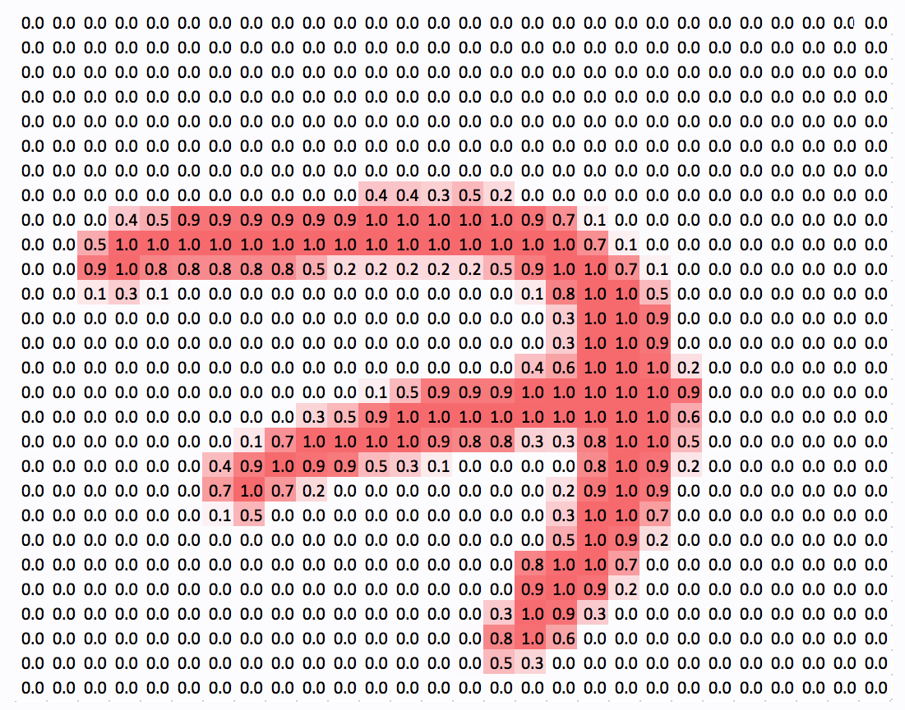
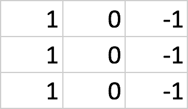
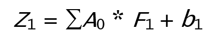
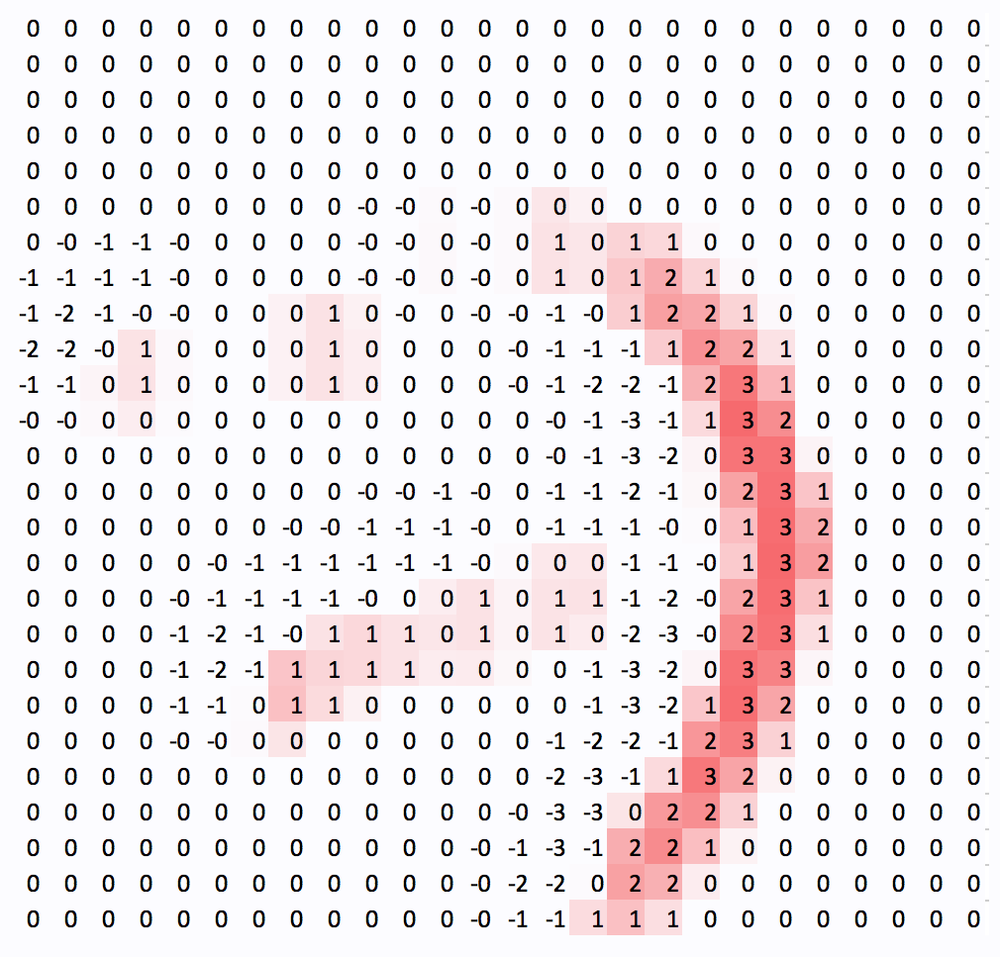

(Sponsors) Get started learning Python with DataCamp's free Intro to Python tutorial. Learn Data Science by completing interactive coding challenges and watching videos by expert instructors. Start Now!
ConvNets – the driving engine behind computer vision
Posted on Jan 09, 2020
When Snapchat first introduced a filter featuring a breakdancing hotdog, the stock price of the company surged. However, investors were less interested in the hotdog’s handstand; what actually fascinated them was the fact that Snapchat had successfully built a powerful form of computer vision technology. Computer vision allows us to both perceive and interpret the real world at scale.
This is an excerpt from the book Machine Learning for Finance written by Jannes Klaas. This book introduces the study of machine learning and deep learning algorithms for financial practitioners.
An important application of computer vision can be seen in finance, specifically in the area of insurance. For instance, insurers might use drones to fly over roofs in order to spot issues that could become an expensive problem. We can dedicate a whole book to talk about the practical applications of computer vision because they are nearly endless. In this article, we will be looking at the convolutional layers, one of the most important building blocks of computer vision models.
Convolution Neural Networks #
Convolutional Neural Networks, ConvNets, or CNNs for short, are the driving engine behind computer vision. ConvNets allow us to work with large images while still keeping the network at a reasonable size.
The name Convolutional Neural Network comes from the mathematical operation that differentiates them from regular neural networks. Convolution is the mathematically correct term for sliding one matrix over another matrix. In the next section of the article, Filters on MNIST, we’ll explore why convolution is important for ConvNets, why this is not the best name in the world for them, and why ConvNets should in reality be called Filter Nets.
You may ask, “But why Filter Nets?” The answer is simply because they work by the use of filters.
In this next section, we will be working with the MNIST dataset. The MNIST dataset is a collection of handwritten digits that has become a standard "Hello, World!" application for computer vision.
Filters on MNIST #
What does a computer actually see when it sees an image? Well, the value of the pixels is stored as numbers in the computer. So, when the computer sees a black and white image of the number seven, it actually sees something similar to the figure shown here:
 The number 7 from MNIST dataset
This preceding figure, 7, featured is an example from the MNIST dataset. The dataset is a popular benchmark for computer vision algorithms.
The larger numbers in the image have been highlighted to make the figure seven visible for humans, but for the computer, the image is really just a collection of numbers. This means that we can perform all kinds of mathematical operations on the image.
When detecting numbers, there are a few lower-level features that make a number. For example, in our 7, there's a combination of one vertical straight line, one straight line on the top, and one straight line through the middle. In contrast, a 9 is made up of four rounded lines that form a circle at the top and a straight, vertical line.
We'll now look at the central idea behind ConvNets, or Filter Nets. We can use small filters that can detect a certain kind of a low-level feature, like a vertical line, and then slide it over the entire image to detect all the vertical lines in the image.
The following figure shows how a vertical line filter would look like:

The preceding figure shows us a 3 × 3 matrix. To detect vertical lines in our image, we need to slide this filter over the image.
Using the MNIST dataset below, we start at the top-left corner and slice out the upper-most top left 3 × 3 grid of pixels, which in this case is all zeros.
We then perform an element-wise multiplication of all the elements in the filter with all elements in the slice of the image. We then sum up these nine products and add the bias. This value then forms the output of the filter and gets passed on as a new pixel to the next layer:

As a result, the output of our vertical line filter will look like this:
 The output of a vertical line filter
Take a minute to notice that the vertical lines are visible while the horizontal lines are not. Only a few artifacts remain. Also, notice how the filter captures the vertical line from one side.
Since it responds to high pixel values on the left and low pixel values on the right, only the right side of the output shows strong positive values. Meanwhile, the left side of the line actually shows negative values. This is not a big problem in practice as there are usually different filters for different kinds of lines and directions.
In this article section, we looked at one of the building blocks of computer vision models – Convolutional Neural Networks. We applied a vertical filter on the MNIST dataset using the ConvNets. After applying filter, we saw that the vertical lines were still visible but the horizontal lines were removed. Similarly, we can apply a second filter. To know more about this, please refer to Jannes Klaas’ latest book Machine Learning for Finance.
About the Author #
Jannes Klaas is a quantitative researcher with a background in economics and finance. He taught machine learning for finance as lead developer for machine learning at the Turing Society, Rotterdam. He has led machine learning bootcamps and worked with financial companies on data-driven applications and trading strategies.
Other Tutorials (Sponsors)
This site generously supported by DataCamp. DataCamp offers online interactive Python Tutorials for Data Science. Join over a million other learners and get started learning Python for data science today!

View Comments